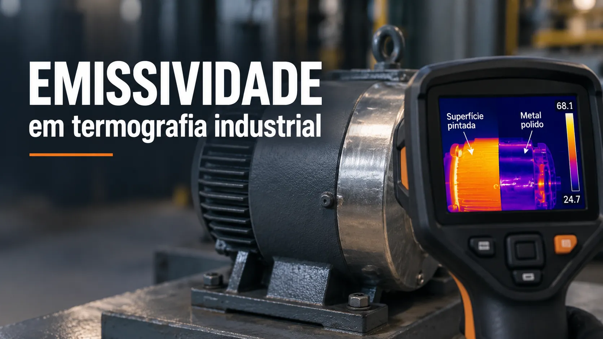

Emissividade em termografia: como interpretar a temperatura infravermelha
Conteúdo técnico: ALOGY Engenharia · Atualizado em: 11/09/2026

A câmera termográfica não mede diretamente a temperatura interna do equipamento. Ela detecta radiação infravermelha que chega à lente e calcula uma temperatura aparente a partir dos parâmetros informados. Em superfície metálica brilhante, grande parte dessa radiação pode vir do ambiente refletido.
Emissividade não é um número universal do material
Emissividade representa a eficiência com que a superfície emite radiação térmica em relação a um emissor ideal. Material, acabamento, oxidação, pintura, comprimento de onda, temperatura e ângulo influenciam o valor. Tabelas são ponto de partida; não substituem a condição real da superfície.
O que a câmera precisa separar
- Radiação emitida: parcela relacionada à temperatura e emissividade.
- Radiação refletida: energia de pessoas, céu, paredes, fornos ou tubulações refletida pela superfície.
- Atmosfera: distância, temperatura do ar e umidade podem afetar a transmissão.
- Óptica/spot size: o alvo precisa preencher pixels suficientes para evitar mistura com regiões vizinhas.
Reflexo térmico pode parecer aquecimento
Uma conexão polida pode mostrar a silhueta quente do operador ou de outra fonte. Se a região aparente mudar de posição quando o ângulo da câmera muda, a hipótese de reflexão ganha força. Um aquecimento real tende a permanecer associado ao componente, embora o valor numérico ainda dependa da configuração correta.
A paleta também não prova temperatura absoluta: a escala pode se reajustar automaticamente e transformar pequenas diferenças em cores fortes.
Procedimento de campo para uma comparação confiável
- Defina se a tarefa é qualitativa — localizar anomalia — ou quantitativa — informar temperatura com incerteza conhecida.
- Verifique foco, distância, resolução espacial e fontes de reflexão.
- Compare componentes equivalentes sob carga e condição semelhantes.
- Determine emissividade e temperatura aparente refletida por método compatível com o procedimento e o manual da câmera.
- Confirme temperatura crítica com método independente adequado quando necessário.
Termografia versus RTD/termopar
A medição infravermelha observa a superfície sem contato; RTD e termopar medem por contato no ponto de instalação. Os métodos respondem a perguntas diferentes e podem ser complementares. Divergência entre eles precisa considerar local medido, contato térmico, emissividade, gradiente e tempo de resposta.
Erros frequentes
- usar emissividade 0,95 para qualquer superfície;
- medir metal polido diante de uma fonte quente ou céu aberto;
- comparar imagens com escalas, cargas, distâncias ou ângulos diferentes;
- medir através de janela/material sem considerar transmitância e faixa espectral;
- apontar para alvo menor que o ponto de medição;
- emitir diagnóstico conclusivo sem registrar carga e parâmetros radiométricos.
Ferramentas e conteúdos relacionados
Referências técnicas
Aviso técnico
Este material é educativo e apoia medição/triagem. Não substitui capacitação, procedimento, análise elétrica, avaliação de segurança, manual do equipamento ou método metrológico aplicável.